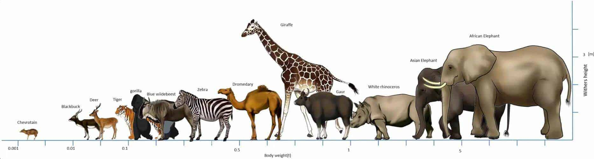

Memeliler
Memeliler (Latince: Mammalia), hayvanlar aleminin insanların da dâhil olduğu, dişilerinde
bulunan meme bezleri ve hem dişi hem erkek bireylerinde bulunan ter bezleri, kıl, işitmede
kullanılan üç orta kulak kemiği ve beyinde yer alan neokorteks bölgesi ile ayrılan bir omurgalı sınıfıdır.

Sürüngenler
Sürüngenler (Latince: Reptilia), omurgalıların soğukkanlı, yumurtlayarak çoğalan, büyük bir sınıftır.
Basitçe yılanlar, kertenkeleler, kaplumbağalar, timsahlar ve tuataralardan oluşur.
Kuşlar
Kuş; tüyleri, dişsiz gagaları, yumurtladıkları sert kabuklu yumurtalar yoluyla üreyen, yüksek metabolizma
hızına sahip, dört odacıklı kalpleri ve hafif ama güçlü bir iskelet yapısına sahip, Aves sınıfını oluşturan
sıcakkanlı omurgalı hayvanlar grubudur. Tüm dünyada yaygın olarak yaşayan kuşların boyutları arı sinek kuşunda
5 cm ila deve kuşunda 2,75 m arasında değişir